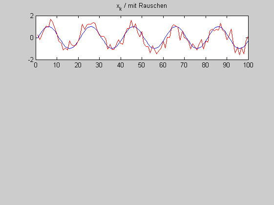
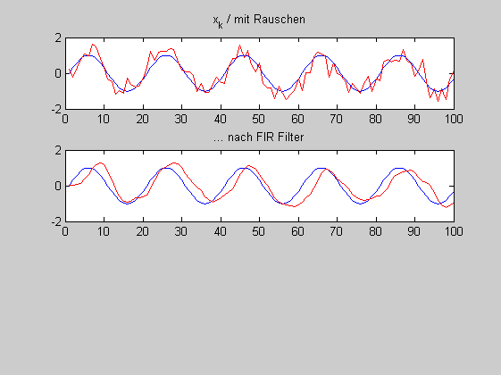
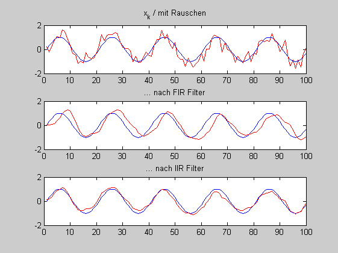

Contents
aGlaettungsfilter.m
Ein FIR-Filter mit den Koeffizienten \( b = [ 1, 1, 1] \) wird zweimal hintereinander auf ein verrauschtes Sinussignal angewandt. (i) Welcher Gesamtimpulsantort entspricht diese Verarbeitung und welche Wirkung hat das Filter? (ii) Welche Impulsantwort hat ein IIR-Filter mit den Koeffizienten \(b_0 = 1 \) und \( a_1 = -0.9 \)? Welche Wirkung hat das Filter? (iii) Beantworten Sie die Fragen (i) und (ii) für ein Rechtecksignal.
close all; clear all;
Verrauschter Sinus
T_A = 0.001 % [s] F = 50 % [Hz] t = (0:T_A:0.1-T_A); % 0.1 s, x_k = sin (2*pi*F*t); % Später für Aufgabe (iii) %x_k(x_k>0) = 1; %x_k(x_k<0) = -1; xr_k = x_k + 0.4* randn(size(x_k)); figure(1); subplot(3,1,1); plot(x_k); ; hold on; plot(xr_k,'r'); title('x_k / mit Rauschen'); hold off;
T_A =
1.0000e-003
F =
50
 (i) Gesamtimpulsantwort zweimal [1 1 1 ]
b = [ 1, 1, 1] impuls = [ 1 0 0 0 0 0] y = filter(b,1,impuls); g_g = filter(b,1,y) g_g = conv(b,b) % gleiches Ergebnis % Wirkung des Filters yr_k = filter(g_g,1,xr_k); figure(1); subplot(3,1,2); plot(x_k); ; hold on; plot(yr_k/9,'r'); title('... nach FIR Filter'); hold off;
b =
1 1 1
impuls =
1 0 0 0 0 0
g_g =
1 2 3 2 1 0
g_g =
1 2 3 2 1
 (ii) IIR-Filter
b = 1 ; a = -0.5; imulsantort = filter(b,[1 a],impuls) yr_k = filter(b,[1 a],xr_k); % Trick für Nullphasige IIR Filter: yr_k = fliplr(filter(b,[1 a],fliplr(yr_k))); % siehe auch filtfilt.m figure(1); subplot(3,1,3); plot(x_k); hold on; plot(yr_k/(2/(1+a)),'r'); title('... nach IIR Filter'); hold off;
imulsantort =
1.0000 0.5000 0.2500 0.1250 0.0625 0.0313
 (iii) Rechtecksiganl
entsteht aus Sinus durch Schwellwertoperation
x_k(x_k>0) = 1; x_k(x_k<0) = -1;